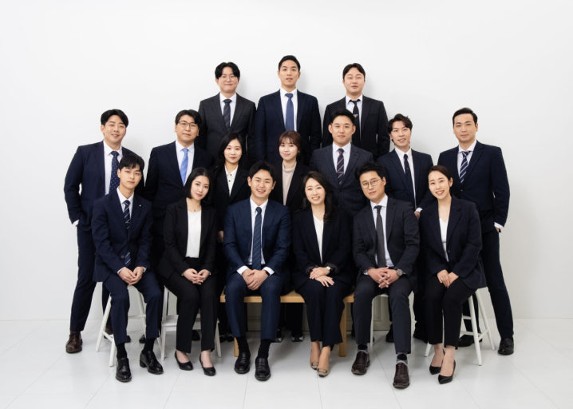

일본 중입자 치료,
더 이상 ‘부르는 게 값’이 아닙니다.
생명을 담보로 폭리를 취하는 관행, 이제는 끝나야 합니다.
가장 투명한 비용으로, 가장 완벽한 의료 동행을 약속합니다.
실제 원가 100% 공개
최저가가 아닐 시 대행 수수료 전액 환불 보장
30인 전문 법인 시스템
의료·통역·법무까지 1인 기업의 먹튀 완벽 차단
인천공항부터 전담 동행
현지 유학생이 아닌 '일본 현지인' 매니저 24h 밀착
치료만으로도 벅찬데, 왜
에이전시의 횡포
까지
걱정해야 합니까?
지푸라기라도 잡고 싶은 환자와 가족의 절박함. 그 절박함 뒤에 숨어 폭리를 취하고 무책임하게 방치하는 악성 관행들이 시장에 만연해 있습니다.
₩ 1.5~2배 부풀려진 깜깜이 수수료
실제 일본 병원에 납부해야 할 원가가 얼마인지 숨긴 채, 터무니없는 총액을 청구합니다. 환자는 수수료로 얼마를 내는지조차 알 수 없습니다.
🏃♂️ 1인 기업 먹튀와 반쪽짜리 케어
환자를 비행기에 혼자 태워 보내고, 현지 병원 앞에서는 전문 통역가가 아닌 아르바이트 유학생을 붙여줍니다. 사고 발생 시 책임질 법적 주체가 없습니다.
우리가 덜 가져가고,
환자에게 더 내어드리겠습니다
현지 원가 100% 공개 &
최저가 보상제
병원에 직접 납부하는 '실제 의료비'와 당사의 '수속 대행 수수료'를 계약서에 완벽하게 분리하여 명시합니다.
만약 타사보다 수수료가 1원이라도 비싸다면, 대행 수수료를 전액(0원) 면제해 드립니다.

30인 전문가로 구성된
탄탄한 법인 회사
수익만을 쫓는 1인 영세 에이전시의 '먹튀'와 불안정성을 원천 차단했습니다.
상담, 수속, 통역, 법무까지 각 분야 최상위 전문가 30명이 오직 한 분의 환자를 위해 완벽한 원팀(One-team)으로 움직입니다.

인천공항부터 ‘일본
현지인’ 전담 동행
환자를 혼자 비행기에 태우고 일본 병원 앞에서 만나는 반쪽짜리 동행이 아닙니다.
한국어에 능통한 '일본 현지인' 매니저가 한국 공항 출국장부터 24시간 밀착 보호합니다.
어떤 암이 치료 가능할까요?
머리부터 골반까지, 중입자 치료가 가능한 주요 암종
두개저 종양
Skull Base Tumor
두경부암
Head & Neck Cancer
안구 종양
Choroidal Melanoma
골연부 종양
Bone & Soft Tissue
전립선암
Prostate Cancer
폐암
Lung Cancer
간암
Liver Cancer
췌장암
Pancreatic Cancer
신장암
Renal Cell Carcinoma
식도암/대장암
Esophageal/Colorectal
부인과암/유방암
Gynecologic/Breast
전이성 종양
Metastatic Tumor
희망고문 없이,
정직하게 말씀드립니다.
현실적으로 중입자 치료 적용이 어려운 케이스는 수익을 위해 무리하게 수속을 진행하지 않고 솔직하게 불가능을 말씀드립니다.
대신, 환자분의 소중한 시간을 아껴드리기 위해 국내 진료기록만 전달해 주시면 일본 현지 전문의가 치료 가능 여부를 무료로 먼저 판독해 드립니다.
암 치료는 ‘골든타임’ 싸움입니다
대기 없는 즉시 수속, 일본 6대 메이저 병원 다이렉트 네트워크
일본어를 전혀 몰라도 완벽합니다
집을 나서는 순간부터 완치 후 귀국까지, 빈틈없는 5단계 안심 동행
국내 무료
사전 판독
100% 원가 분리
안심 계약
인천공항 출발부터
현지인 매니저 동행
의료 전문 원어민
1:1 병원 통역
안전한 귀국 및
평생 사후 관리
자주 묻는 질문
환자분들이 가장 궁금해하시는 내용을 모았습니다.
암종 및 환자분의 상태에 따라 다르지만, 일반적으로 1주에서 4주 정도 소요되며 치료 횟수는 1회에서 최대 16회까지 진행됩니다. (예: 전립선암 12회, 간암 2~4회 등)
일본 6대 메이저 병원 기준, 병원비(원가)는 약 314만 엔에서 578만 엔 사이입니다. 저희 희망중입자동행센터는 병원 납부 원가를 100% 투명하게 공개하며, 1.5~2배씩 부풀리는 관행 없이 합리적인 대행 수수료만을 고지합니다.
국내에서 촬영하신 최근 영상 자료(CT, MRI, PET-CT 등)와 진단서 및 소견서를 저희에게 전달해 주시면, 번역 후 일본 현지 전문의에게 보내 치료 가능 여부를 무료로 사전 판독해 드립니다.
아닙니다. 국내는 대기 인원이 많아 수개월 이상 기다려야 하는 경우가 많지만, 일본은 다수의 치료 센터를 보유하고 있습니다. 저희는 일본 6대 메이저 병원과의 다이렉트 네트워크를 통해 대기 없이 가장 빠른 즉시 수속 및 치료 시작이 가능하도록 돕고 있습니다.
환자분의 건강 상태와 주치의의 의학적 판단에 따라 병행 가능 여부가 결정됩니다. 사전 판독 단계에서 일본 의료진이 기존 치료 내역을 면밀히 검토하여 가장 안전하고 효과적인 병행 및 치료 계획을 안내해 드립니다.